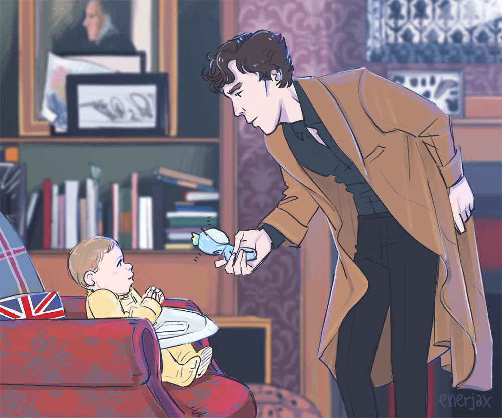

CONDITIONALS - TRYBY WARUNKOWE

Zero Conditional
UŻYCIE
0 trybu warunkowego używamy, kiedy chcemy opisać prawdy ogólne lub prawa fizyki.
BUDOWA
When (kiedy) / If (jeśli) + Present Simple + Present Simple.
lub
Present Simple + when (kiedy) / if (jeśli) + Present Simple.
PRZYKŁADY
When it’s really hot, we sweat.
If you heat water to 100 degrees Celsius, it boils.
If you want to leave a message, speak after the beep.
I Conditional
UŻYCIE
I trybu warunkowego używamy, kiedy mamy na myśli rzeczy możliwe do spełnienia w przyszłości.
BUDOWA
When (kiedy) / If (jeśli) + Present Simple, will + I forma czasownika
lub
Will + I forma czasownika + when (kiedy) / if (jeśli) + Present Simple
PRZYKŁADY
If it doesn’t rain, we’ll (will) spend time in the garden.
I will go to her party if she invites me.
I’ll call you when I get home.
II Conditional
UŻYCIE
II trybu warunkowego używamy, kiedy mówimy o rzeczach niemożliwych do spełnienia w przyszłości.
BUDOWA
If + Past Simple, would + I forma czasownika
lub
Would + I forma czasownika + if + Past Simple
PRZYKŁADY
If Moriarty wanted the jewels, he’d have them.
If I met Benedict Cumberbatch, I’d (would) tell him he’s an amazing actor.
I’d f I had more money I’d buy a new car.
III Conditional
UŻYCIE
III trybu warunkowego używamy, kiedy rzeczy, o których mówimy nie mają ŻADNYCH szans na spełnienie, ponieważ już się wydarzyły.
BUDOWA
If + Past Perfect, would have + III forma czasownika
lub
Would have + III forma czasownika + if + Past Perfect
PRZYKŁADY
If I had met Susan last week, I’d have given her this book.
If you had come earlier I wouldn't have had to wait for you so long.
We would have passed our exams if we had studied harder.
